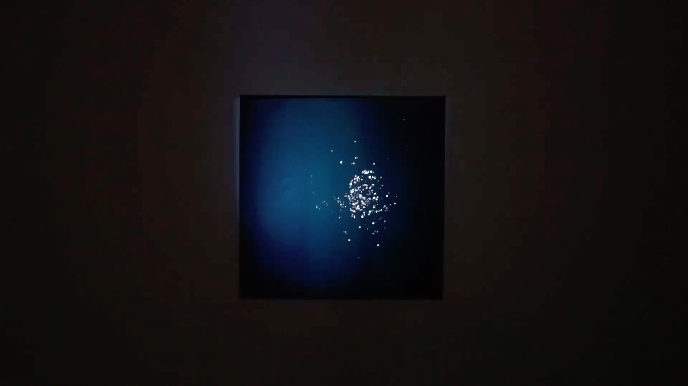

暗転と永遠の中で。
2019.12 / Video Installation / 2min 10sec

1つの黒い正方形のスクリーンに朝・夜それぞれの河面の映像が交互に投影される。この河は全て東京都内で撮影した。
Caption
山手線の外側にある街。石神井川は深く冷たいコンクリートの堤防の下に静かに流れる。川に沿って葉の落ちた枝垂れ桜の並木道が伸び、住宅が立ち並ぶ。僕たちは眠る必要がある。眠らないネオンと都市の明かり。東京の端っこに追いやられた暗闇。
電車に乗る。女の子とのデートの朝。乗車口のあたりに立って、寄りかかる。やることもないのでイヤホンをつけて、外の景色に目をやる。音楽が流れてくる。電車が高架線に差し掛かると、隅田川が煌いて、僕はこの景色がいつまでも続くと思う。スカイツリーが見えた。
展示情報
筑波大学 情報メディア創成学類の講義「ディジタルコンテンツ表現実習」最終成果発表会「1/100展」
Credits
- 映像：小貫 智弥
- 音楽：金子紫苑